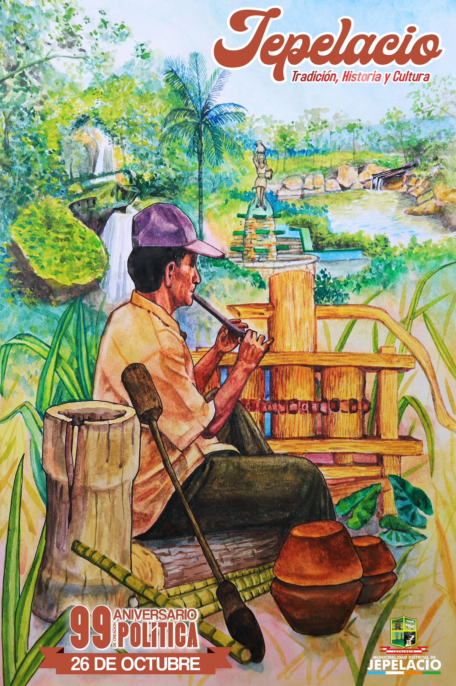

Nosotros
MISKI nace como un emprendimiento familiar en la ciudad de Jepelacio dedicado a transformar la caña de azúcar en productos de la más alta calidad. Valoramos los procesos artesanales que han pasado de generación en generación.



Nuestra Misión
Brindar derivados de la caña que conserven su valor nutricional y sabor auténtico, apoyando el desarrollo local.
Nuestra Visión
Ser reconocidos como el principal referente de productos derivados de la caña en la región San Martín.
LOCALES
MOYOBAMBA
Jr. 20 de abril 456
JEPELACIO
Av. Carretera Barbascal 104